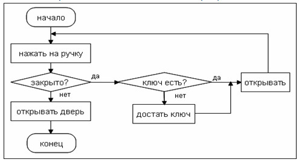
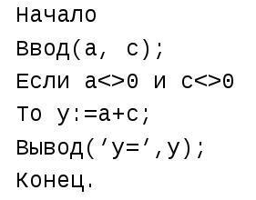

Алгоритм — это конечная последовательность чётко определённых инструкций, предназначенных для решения некоторой задачи.
Свойства корректного алгоритма:
Способы описания алгоритмов:
Пример блок-схемы:

Пример псевдокода:

C++ — язык программирования общего назначения, сочетающий высокую производительность и богатые возможности. Он позволяет:
В рамках данной лекции мы рассмотрим процедурное программирование — основу для понимания алгоритмов.
Классическая программа «Hello, World!» демонстрирует минимальную структуру.
#include <iostream> // директива препроцессора: подключение заголовочного файла для ввода/вывода
int main() { // главная функция — точка входа в программу
std::cout << "Hello, World!" << std::endl;
return 0; // возврат 0 означает успешное завершение
}
Ключевые элементы:
#include — подключение библиотек.int main() — функция, с которой начинается выполнение. Тип возврата int (целое число).{ } — тело функции.std::cout — объект для вывода на консоль.return 0; — завершение функции main и возврат кода ошибки (0 = успех).Каждый оператор в C++ заканчивается точкой с запятой ;.
Комментарии игнорируются компилятором и нужны для пояснения логики программы.
// Однострочный комментарий
/*
Многострочный
комментарий
*/
Полезно комментировать сложные участки алгоритма, но код должен быть понятен и без избыточных комментариев.
Любая программа оперирует данными. В C++ каждая переменная имеет тип, определяющий размер памяти и допустимые операции.
| Тип | Назначение | Пример диапазона (зависит от платформы) |
|---|---|---|
int | Целые числа | ≈ -2·10⁹ … 2·10⁹ |
double | Вещественные числа с двойной точностью | ≈ ±1.7·10³⁰⁸ |
float | Вещественные числа (меньшая точность) | ≈ ±3.4·10³⁸ |
char | Одиночный символ (1 байт) | 'A', '7', '\n' |
bool | Логический тип | true или false |
Также существуют модификаторы short, long, unsigned.
Пример объявления переменных:
int age = 20;
double pi = 3.1415926535;
char grade = 'A';
bool isAlive = true;
C++ поддерживает стандартные математические операции над числами:
+ — сложение- — вычитание* — умножение/ — деление (для целых чисел — целочисленное, для вещественных — с плавающей точкой)% — остаток от деления (только для целых типов)Важные нюансы:
int a = 10, b = 3;
int c = a / b; // c = 3 (целочисленное деление, дробная часть отбрасывается)
double d = a / b; // d = 3.0 (т.к. оба операнда int, сначала целочисленное деление, затем преобразование)
double e = 10.0 / 3; // e ≈ 3.33333
int remainder = 10 % 3; // remainder = 1
Для получения вещественного результата хотя бы один операнд должен быть вещественным.
int x = 5;
x += 3; // эквивалентно x = x + 3;
x -= 2; // x = x - 2;
x *= 4; // x = x * 4;
x /= 2; // x = x / 2;
x %= 3; // x = x % 3;
int counter = 0;
counter++; // постинкремент: увеличивает на 1
++counter; // преинкремент: увеличивает на 1
counter--; // постдекремент
--counter; // предекремент
Разница проявляется в выражениях: int b = a++; (сначала b получает старое a, затем a увеличивается) и int b = ++a; (сначала a увеличивается, затем присваивается b).
Для взаимодействия с пользователем используются потоки std::cin (ввод) и std::cout (вывод), определенные в заголовке <iostream>.
Вывод в консоль:
std::cout << "Значение pi = " << 3.1415 << std::endl;
// std::endl — перевод строки и сброс буфера.
// Можно использовать '\n' для перевода строки без сброса.
Ввод с клавиатуры:
int number;
std::cout << "Введите целое число: ";
std::cin >> number;
std::cout << "Вы ввели: " << number << std::endl;
Можно вводить несколько значений подряд:
int a, b;
std::cin >> a >> b; // пользователь вводит два числа через пробел или Enter
Функция — поименованный блок кода, который выполняет определенную задачу. Функции позволяют избежать дублирования, структурировать программу и реализовывать модульные алгоритмы.
Синтаксис определения функции:
тип_возврата имя_функции(параметры) {
// тело функции
return значение; // если тип_возврата не void
}
Пример: функция сложения двух чисел.
#include <iostream>
// Объявление (прототип) функции
int add(int x, int y);
int main() {
int result = add(5, 7);
std::cout << "Сумма: " << result << std::endl;
return 0;
}
// Определение функции
int add(int x, int y) {
return x + y;
}
Функции без возврата (void):
void printGreeting() {
std::cout << "Добро пожаловать в программу!" << std::endl;
// return; — не обязателен, но может быть для досрочного выхода
}
Параметры по умолчанию:
void showMessage(std::string msg = "Привет, мир!") {
std::cout << msg << std::endl;
}
// Вызов: showMessage(); -> "Привет, мир!"
// showMessage("Hi!"); -> "Hi!"
Для выполнения сложных математических вычислений используется заголовочный файл <cmath>. Основные функции:
sqrt(x) — квадратный корень из x.pow(x, y) — x в степени y.abs(x) — абсолютное значение для целых; fabs(x) — для вещественных.sin(x), cos(x), tan(x) — тригонометрические (аргумент в радианах).exp(x) — eˣ.log(x) — натуральный логарифм; log10(x) — десятичный.ceil(x) — округление вверх, floor(x) — округление вниз, round(x) — к ближайшему целому.Пример использования:
#include <iostream>
#include <cmath>
int main() {
double x = 16.0;
std::cout << "sqrt(16) = " << sqrt(x) << std::endl; // 4
std::cout << "pow(2, 10) = " << pow(2, 10) << std::endl; // 1024
std::cout << "sin(3.14159/2) = " << sin(M_PI/2) << std::endl; // около 1 (M_PI — константа пи)
std::cout << "ceil(3.14) = " << ceil(3.14) << std::endl; // 4
return 0;
}
Примечание: Константа M_PI может быть определена не во всех реализациях <cmath>; в таком случае можно определить свою: const double PI = 3.141592653589793;.
std и директива usingИмена в стандартной библиотеке C++ находятся в пространстве имён std (std::cout, std::cin). Чтобы не писать std:: каждый раз, можно использовать директиву:
using namespace std; // плохая практика в больших проектах, но удобна в учебных целях
Более безопасный способ — использовать отдельные элементы:
using std::cout;
using std::cin;
using std::endl;
В лекциях для краткости иногда используется using namespace std;, но помните о возможных конфликтах имён.